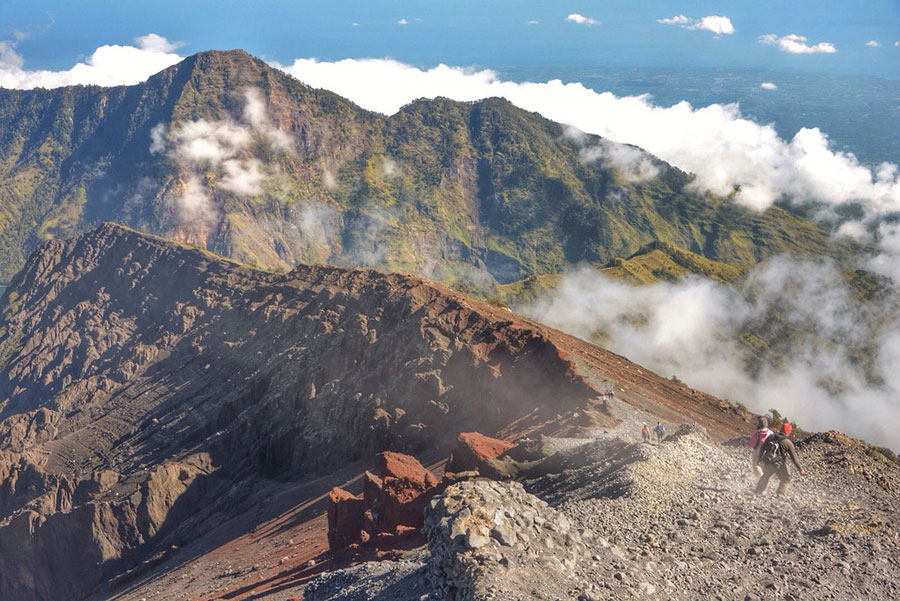
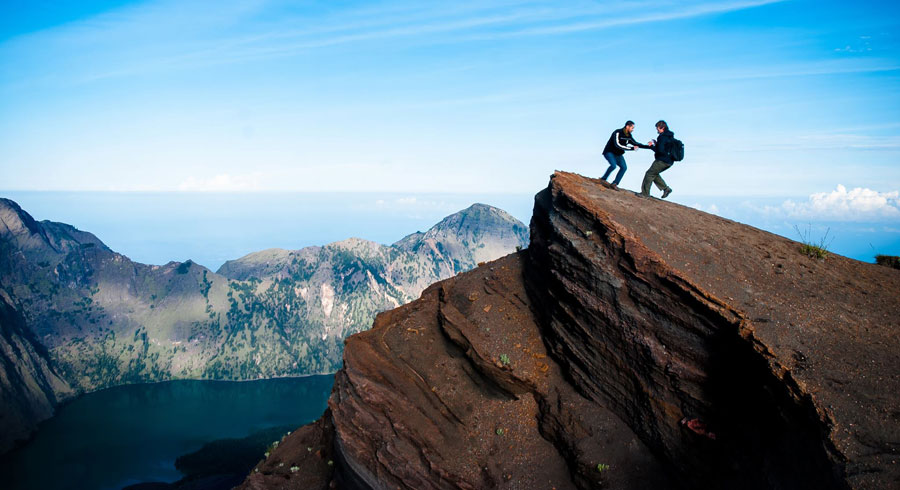
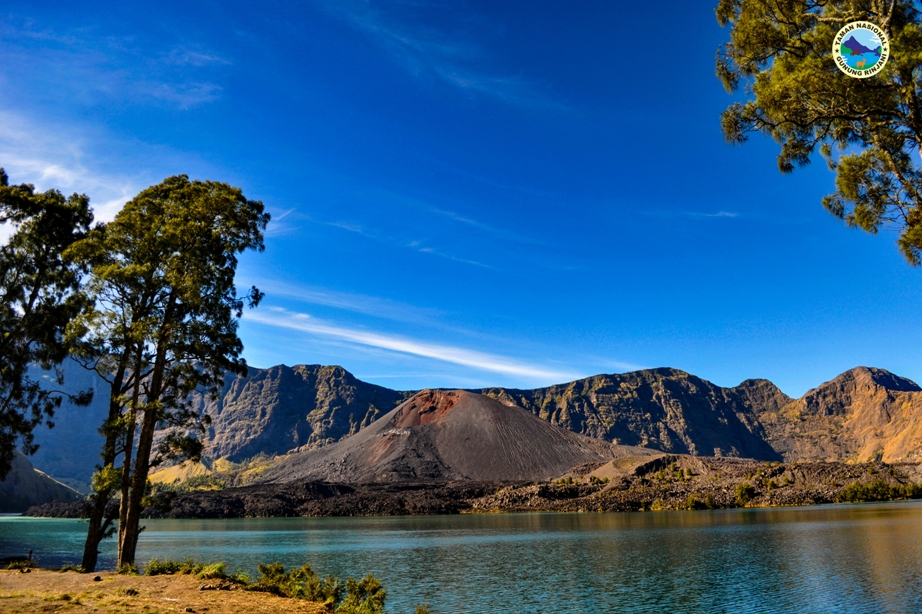
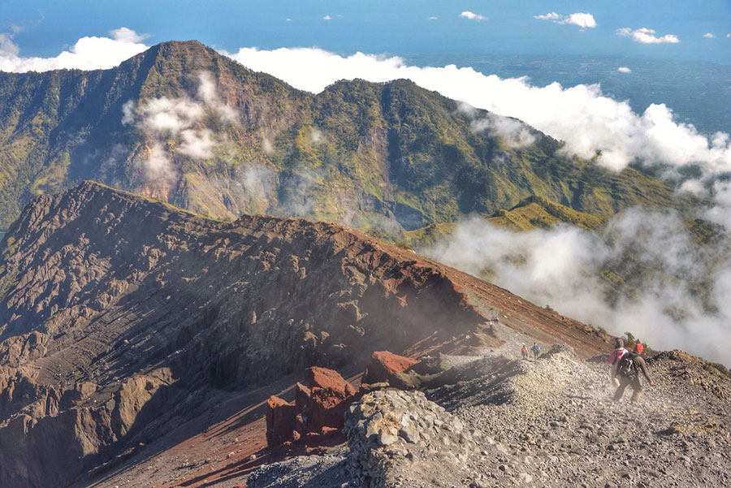
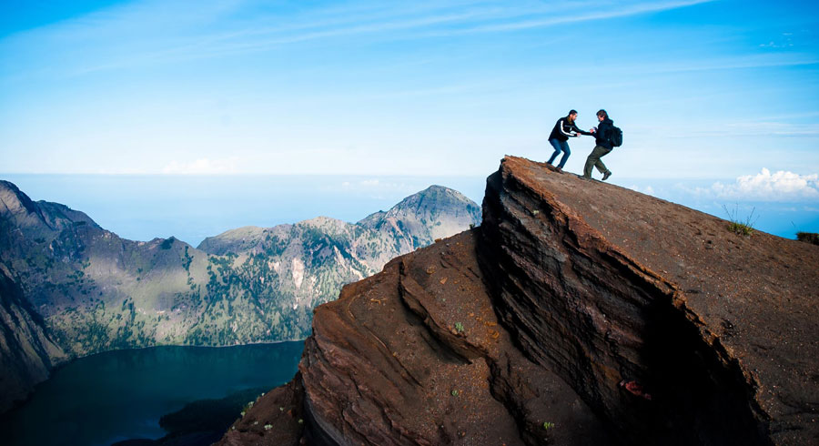
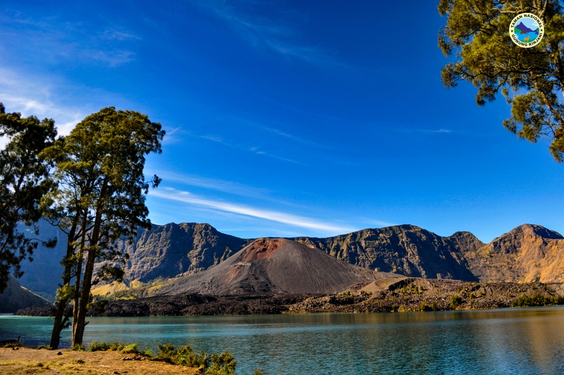
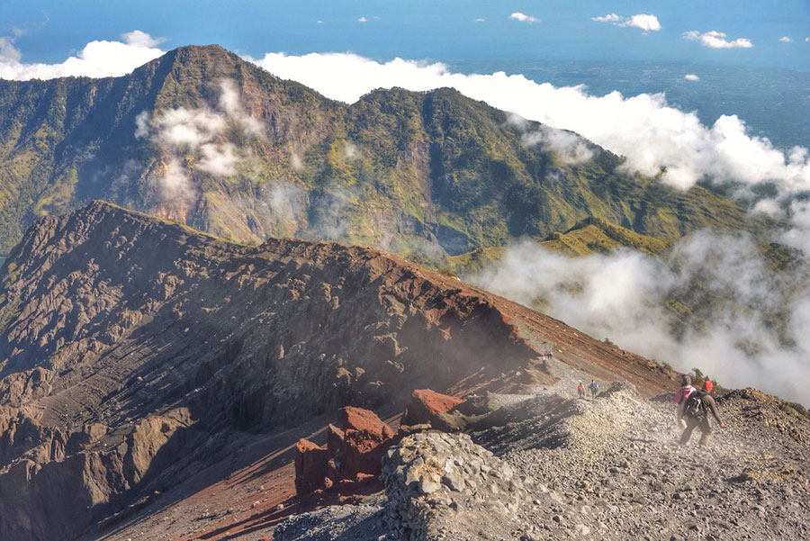
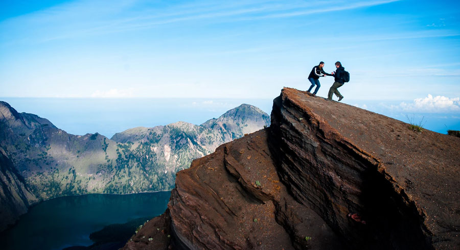
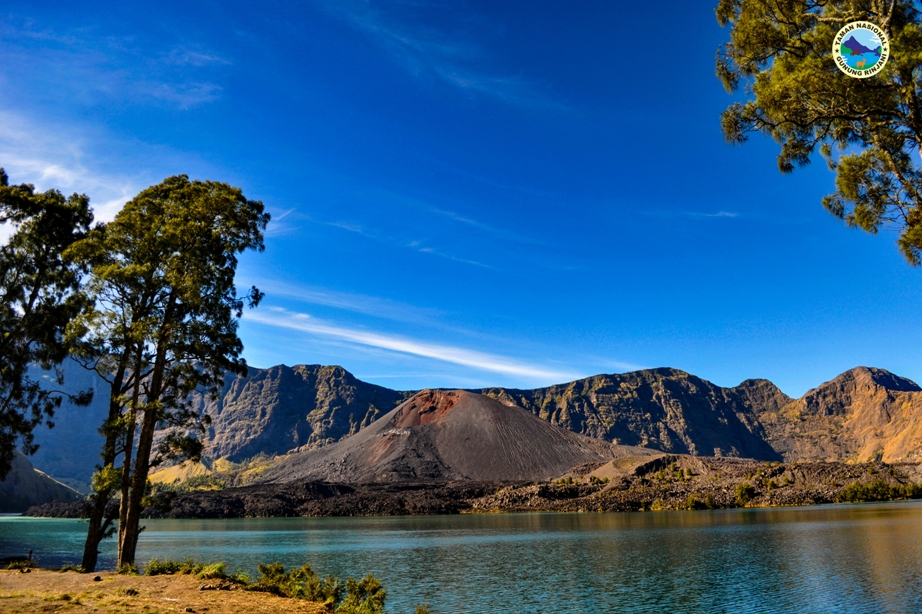
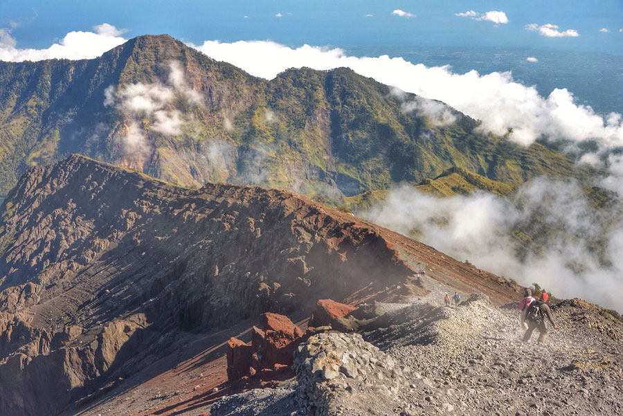
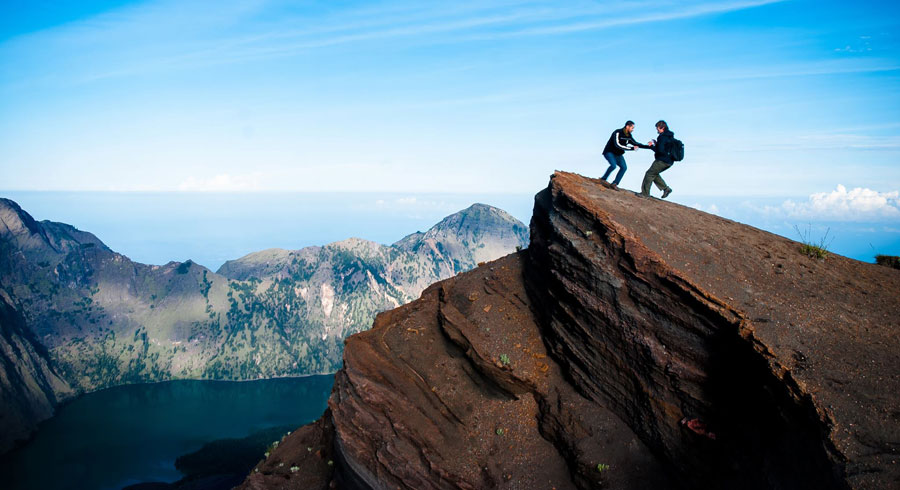
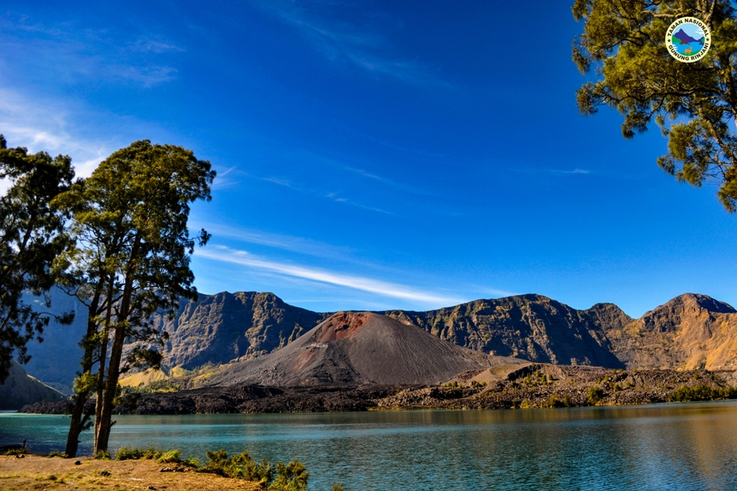
Gunung Rinjani adalah gunung berapi tertinggi kedua di Indonesia, menjulang megah dengan ketinggian 3.726 meter di atas permukaan laut. Terletak di Pulau Lombok, Nusa Tenggara Barat, Rinjani bukan hanya sekadar destinasi bagi para pendaki, tetapi juga simbol kebanggaan dan spiritualitas masyarakat Sasak. Dikelilingi oleh Taman Nasional Gunung Rinjani, kawasan ini menawarkan keanekaragaman hayati yang luar biasa, jalur pendakian menantang, serta pemandangan alam yang spektakuler. Salah satu daya tarik utama di ketinggian ini adalah Danau Segara Anak yang terletak di dalam kaldera bekas letusan besar ribuan tahun lalu. Danau ini berwarna biru kehijauan, seolah menjadi permata yang tersembunyi di tengah pegunungan. Di tepi danau, berdiri pula Gunung Barujari, kerucut vulkanik aktif yang masih sering mengeluarkan asap dan menambah aura dramatis Rinjani. Pendakian ke puncak Rinjani adalah impian banyak petualang. Rutenya tidak mudah dan menantang stamina serta mental, namun setiap langkahnya disuguhi lanskap indah: padang savana, hutan tropis, kabut pagi, dan langit malam yang bertabur bintang. Di beberapa titik, pendaki juga akan menemui sumber air panas alami yang dipercaya memiliki khasiat penyembuhan. Selain keindahan alamnya, Rinjani juga memiliki nilai budaya dan spiritual. Setiap tahun, masyarakat Hindu Lombok dan Bali melakukan upacara keagamaan di Segara Anak untuk menghormati roh leluhur. Gunung Rinjani bukan hanya sebuah gunung—ia adalah tempat suci, ladang petualangan, dan lambang keindahan alam Indonesia yang sejati. Bagi siapa pun yang berani menaklukkannya, Rinjani akan menyisakan kesan mendalam yang tak terlupakan.